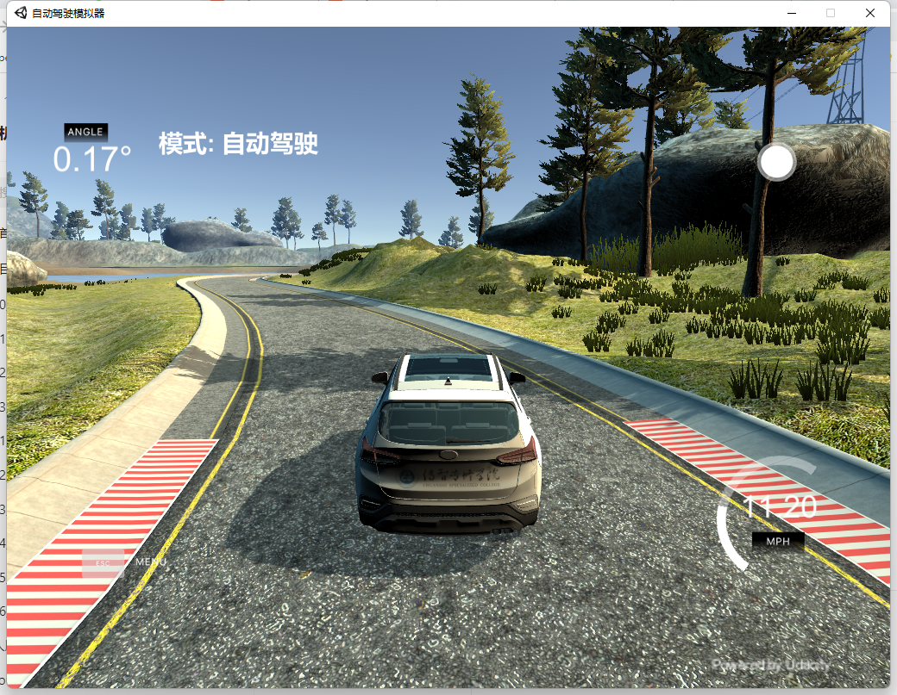
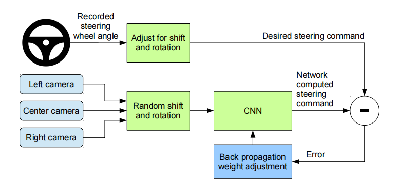
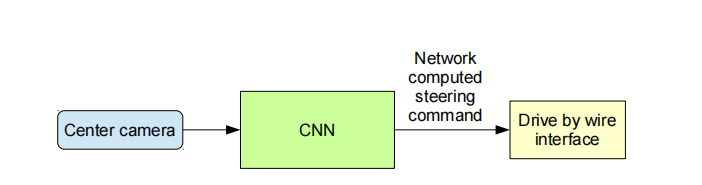
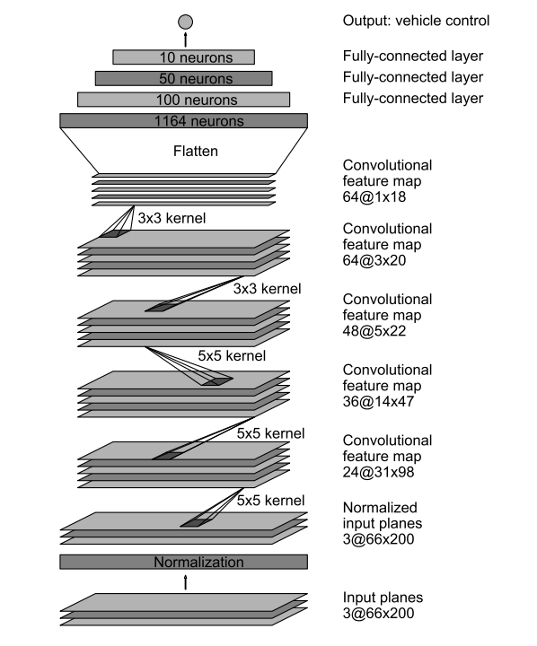
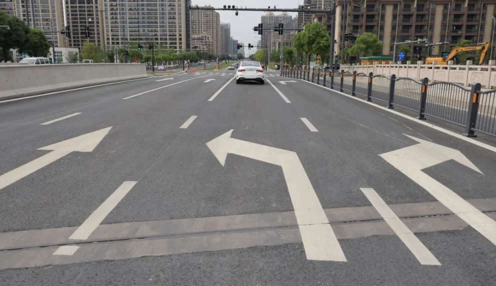
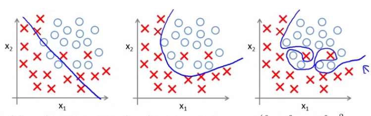

<!DOCTYPE lake>
<p data-lake-id="u17757133" id="u17757133"><span data-lake-id="ub4116d4c" id="ub4116d4c">本章我们主要学习以下内容:</span></p><ol list="u9c70abe1"><li data-lake-id="u11f7ef70" fid="u3f3ab11a" id="u11f7ef70"><span data-lake-id="u9e8634d1" id="u9e8634d1"> 阅读自动驾驶论文</span></li><li data-lake-id="u4181a233" fid="u3f3ab11a" id="u4181a233"><span data-lake-id="uefef1bc5" id="uefef1bc5">采集数据</span></li><li data-lake-id="u01d8fb0c" fid="u3f3ab11a" id="u01d8fb0c"><span data-lake-id="u73c8160c" id="u73c8160c">根据论文搭建自动驾驶神经网络</span></li><li data-lake-id="u1654f369" fid="u3f3ab11a" id="u1654f369"><span data-lake-id="u4beaf32d" id="u4beaf32d">训练模型</span></li><li data-lake-id="u9d486844" fid="u3f3ab11a" id="u9d486844"><span data-lake-id="u1744bb22" id="u1744bb22">在仿真环境中进行自动驾驶</span></li></ol><p data-lake-id="u97b34a92" id="u97b34a92"><br/></p><p data-lake-id="u054de450" id="u054de450"></p><h3 data-lake-id="dpbQe" id="dpbQe"><span data-lake-id="u9c899dc5" id="u9c899dc5">论文介绍</span></h3><p data-lake-id="u9dc66c2f" id="u9dc66c2f"><br/></p><p data-lake-id="u40e1eb8f" id="u40e1eb8f"><span data-lake-id="u0185fced" id="u0185fced">本文参考自2016年英伟达发表的论文</span><a data-lake-id="u379d4db0" href="https://arxiv.org/abs/1604.07316" id="u379d4db0" rel="noopener noreferrer" target="_blank"><span data-lake-id="u506c99d9" id="u506c99d9">《End to End Learning for Self-Driving Cars》</span></a></p><p data-lake-id="u80214436" id="u80214436"><a class="yuque-card-link" href="../../_assets/7271e93a8c9a53a246fb51de.pdf">end2end.pdf</a></p><p data-lake-id="ub0be1290" id="ub0be1290"></p><p data-lake-id="u4f1eb7c7" id="u4f1eb7c7"><span data-lake-id="u79bf52f2" id="u79bf52f2">论文的核心思想是以图像为特征,以方向盘的转向角度为标签,通过深度学习来学习画面对应的方向盘角度.</span></p><p data-lake-id="u5470431e" id="u5470431e"><span data-lake-id="uc0a8988e" id="uc0a8988e">正如上图所示,  我们首先从中间摄像头中读取当前画面, 将读到的画面传输给卷积神经网络, 卷积神经网络提取到图片的特征,计算出方向盘转动的角度, 我们再根据角度控制汽车的方向盘. </span></p><p data-lake-id="u897233fd" id="u897233fd"><span data-lake-id="u4480ab7d" id="u4480ab7d">在2016年自动驾驶研究火热的时候, 这是一篇相当有影响力的论文, 它现在已经成为入门自动驾驶必读的论文.  下面我们来看看它的网络结构</span></p><p data-lake-id="udb30ba8f" id="udb30ba8f" style="text-align: center"></p><p data-lake-id="u174aed6a" id="u174aed6a"><br/></p><p data-lake-id="u6cabe2d4" id="u6cabe2d4"><br/></p><p data-lake-id="u9be8a912" id="u9be8a912"><span data-lake-id="u2a208cdf" id="u2a208cdf">假设现在我们正在开车处于如下图所示的情况 作为一名经验丰富的老司机, 我们需要控制方向盘和油门.  很显然，在当前车道内，我们需要前方路口左转。 我们会控制方向盘往左转动， 同时我们需要降低油门，防止转弯速度过快跑出车道。</span></p><p data-lake-id="u87929307" id="u87929307"></p><p data-lake-id="ubd1f400a" id="ubd1f400a"><span data-lake-id="uddd6a61a" id="uddd6a61a">总结一下刚才老司机的步骤：</span></p><ol list="uf55dd872"><li data-lake-id="ub986b221" fid="ub480f220" id="ub986b221"><span data-lake-id="udd742f39" id="udd742f39">当前画面映入眼帘，</span></li><li data-lake-id="u93e3d6c1" fid="ub480f220" id="u93e3d6c1"><span data-lake-id="uab448490" id="uab448490">大脑飞速运转,得出需要左转的结论</span></li><li data-lake-id="u350e22ae" fid="ub480f220" id="u350e22ae"><span data-lake-id="ud537e712" id="ud537e712">手开始慢慢打方向盘</span></li><li data-lake-id="uda2fe277" fid="ub480f220" id="uda2fe277"><span data-lake-id="u3f546221" id="u3f546221">脚开始控制油门</span></li></ol><p data-lake-id="u2583e8a2" id="u2583e8a2"><span data-lake-id="ucf4da6df" id="ucf4da6df">​</span><br/></p><p data-lake-id="ubb9b47dc" id="ubb9b47dc"><span data-lake-id="u478623ca" id="u478623ca">这个过程如果用计算机来处理的话：</span></p><ol list="ud7fe0954"><li data-lake-id="ubc5b6e80" fid="u4a458708" id="ubc5b6e80"><span data-lake-id="u825c3421" id="u825c3421">摄像头捕捉画面</span></li><li data-lake-id="u2037a262" fid="u4a458708" id="u2037a262"><span data-lake-id="u6f263e1a" id="u6f263e1a">画面经过神经网络处理，得出转弯角度</span></li><li data-lake-id="u596a7c38" fid="u4a458708" id="u596a7c38"><span data-lake-id="u9aad4453" id="u9aad4453">机械控制转弯角度</span></li><li data-lake-id="u5c2fd7ec" fid="u4a458708" id="u5c2fd7ec"><span data-lake-id="u2ff967ee" id="u2ff967ee">机械控制汽车速度</span></li></ol><p data-lake-id="u9a414efa" id="u9a414efa"><span data-lake-id="udb09df3e" id="udb09df3e">​</span><br/></p><p data-lake-id="uaebfacdf" id="uaebfacdf"><span data-lake-id="uea5b1f27" id="uea5b1f27">要想成为一名老司机，以应对各种可能出现的情况，我们要多开车，多见世面。 还是以开车为例，本地司机永远是最牛的司机，例如</span></p><ol list="ud2a89936"><li data-lake-id="ua8f08d81" fid="ubbd288ce" id="ua8f08d81"><span data-lake-id="uac23e3ed" id="uac23e3ed">武汉的公交司机，敢在水里开公交，因为他们频繁遭遇暴雨，已经掌握了开潜艇的技巧</span></li><li data-lake-id="u99719c01" fid="ubbd288ce" id="u99719c01"><span data-lake-id="u1a773531" id="u1a773531">重庆的出租车司机，完全不需要高德，百度的误导，因为这个地方他们比导航软件还熟</span></li><li data-lake-id="u2bda0bfa" fid="ubbd288ce" id="u2bda0bfa"><span data-lake-id="ub9287d3f" id="ub9287d3f">广州的出租车，在错综复杂的高架桥中高速穿行，因为他们已经积累到了丰富的经验，而新进广州的司机，可能分不清现在应该走在桥上还是桥下</span></li></ol><p data-lake-id="ucbf1a8bf" id="ucbf1a8bf"><span data-lake-id="u69f431fd" id="u69f431fd">​</span><br/></p><p data-lake-id="u2bde9b03" id="u2bde9b03"><span data-lake-id="u8ba97d9a" id="u8ba97d9a">我们要想让电脑成为一名老司机，我们需要按照如下步骤进行：</span></p><ol list="u9ac58293"><li data-lake-id="ud7247888" fid="ucc69602d" id="ud7247888"><span data-lake-id="ua6935287" id="ua6935287">搜集数据： 画面 ---- 转弯角度</span></li><li data-lake-id="ua66c68b4" fid="ucc69602d" id="ua66c68b4"><span data-lake-id="u31a8b662" id="u31a8b662">训练模型：神经网络</span></li><li data-lake-id="u1da66049" fid="ucc69602d" id="u1da66049"><span data-lake-id="ub2dbf41e" id="ub2dbf41e">验证模型：车里坐个人，时刻关注车辆运行的状态</span></li></ol><p data-lake-id="ua2df7778" id="ua2df7778"><span data-lake-id="u393005dc" id="u393005dc">​</span><br/></p><h3 data-lake-id="YGdXu" id="YGdXu"><span data-lake-id="u9289587b" id="u9289587b">环境搭建</span></h3><span class="yuque-card-unsupported">[codeblock]</span><h3 data-lake-id="OMydS" id="OMydS"><span data-lake-id="u4f228814" id="u4f228814">数据采集</span></h3><p data-lake-id="u6efbe678" id="u6efbe678"><span data-lake-id="u824cc04a" id="u824cc04a">​</span><br/></p><span class="yuque-card-unsupported">[codeblock]</span><p data-lake-id="u38a607b3" id="u38a607b3"><span data-lake-id="ub4c26522" id="ub4c26522">​</span><br/></p><h3 data-lake-id="Bwht8" id="Bwht8"><span data-lake-id="ue259c5a0" id="ue259c5a0">模型定义</span></h3><p data-lake-id="ue8a37713" id="ue8a37713"><br/></p><p data-lake-id="u0ab6ba76" id="u0ab6ba76"><br/></p><span class="yuque-card-unsupported">[codeblock]</span><p data-lake-id="u72af8d37" id="u72af8d37"><span data-lake-id="u0253f5ac" id="u0253f5ac">​</span><br/></p><h4 data-lake-id="RbFOa" id="RbFOa"><span data-lake-id="u22b379da" id="u22b379da">过拟合问题</span></h4><p data-lake-id="u935e0963" id="u935e0963"><span data-lake-id="u6ae25808" id="u6ae25808" style="color: rgb(18, 18, 18)">过拟合是指模型只过分地匹配特定训练数据集，以至于对</span><strong><span data-lake-id="u70adf5ce" id="u70adf5ce" style="color: rgb(18, 18, 18)">训练集外数据</span></strong><span data-lake-id="u53c38af9" id="u53c38af9" style="color: rgb(18, 18, 18)">无良好地拟合及预测。其本质原因是模型</span><strong><span data-lake-id="uc333eab8" id="uc333eab8" style="color: rgb(18, 18, 18)">从训练数据中学习到了一些统计噪声，即这部分信息仅是局部数据的统计规律</span></strong><span data-lake-id="u58a586a7" id="u58a586a7" style="color: rgb(18, 18, 18)">，该信息没有代表性，在训练集上虽然效果很好，但未知的数据集（测试集）并不适用。</span></p><p data-lake-id="u70177b61" id="u70177b61"><span data-lake-id="ua528ddc4" id="ua528ddc4" style="color: rgb(18, 18, 18)">​</span><br/></p><p data-lake-id="u684a5d72" id="u684a5d72"><span data-lake-id="ua0356921" id="ua0356921" style="color: rgb(18, 18, 18)">一句话讲就是过拟合在训练集中表现良好，但是在测试集中表现较差的一种现象</span></p><p data-lake-id="u457586e0" id="u457586e0"></p><p data-lake-id="u599a5d90" id="u599a5d90"><span data-lake-id="u00494bd4" id="u00494bd4" style="color: rgb(18, 18, 18)">​</span><br/></p><p data-lake-id="u521f4c3c" id="u521f4c3c"><span data-lake-id="ub05ed33c" id="ub05ed33c" style="color: rgb(18, 18, 18)">Dropout是正则化技术简单有趣且有效的方法，在神经网络很常用。其方法是：在每个迭代过程中，以一定概率p随机选择输入层或者隐藏层的（通常隐藏层）某些节点，并且删除其前向和后向连接（让这些节点暂时失效）。权重的更新不再依赖于有“逻辑关系”的隐藏层的神经元的共同作用，一定程度上避免了一些特征只有在特定特征下才有效果的情况，迫使网络学习更加鲁棒(指系统的健壮性)的特征，达到减小过拟合的效果。这也可以近似为机器学习中的集成bagging方法，通过bagging多样的的网络结构模型，达到更好的泛化效果。</span></p><p data-lake-id="u9a55e61e" id="u9a55e61e"><span data-lake-id="u4267c21b" id="u4267c21b" style="color: rgb(18, 18, 18)">​</span><br/></p><p data-lake-id="ub1646990" id="ub1646990"><span data-lake-id="ud0a86dac" id="ud0a86dac">torch.nn.Dropout(p=0.5, inplace=False)</span></p><p data-lake-id="ua0882c14" id="ua0882c14"><span data-lake-id="u0a11738f" id="u0a11738f">训练过程中按照概率p随机地将输入张量中的元素置为0</span></p><p data-lake-id="ubdad7ff1" id="ubdad7ff1"><span data-lake-id="u730652e1" id="u730652e1">​</span><br/></p><p data-lake-id="ud5aba7cf" id="ud5aba7cf"><span data-lake-id="u2f7b6a93" id="u2f7b6a93">evere channel will be zeroed out independently on every forward call.</span></p><p data-lake-id="u9a16f804" id="u9a16f804"><span data-lake-id="u94378321" id="u94378321">​</span><br/></p><p data-lake-id="ud8b60f03" id="ud8b60f03"><span data-lake-id="ud189db70" id="ud189db70">Parameters:</span></p><p data-lake-id="u6941df42" id="u6941df42"><span data-lake-id="u99ec2152" id="u99ec2152">p(float):每个元素置为0的概率，默认是0.5</span></p><p data-lake-id="u73cee563" id="u73cee563"><span data-lake-id="u3bd6e0fb" id="u3bd6e0fb">inplace(bool):是否对原始张量进行替换</span></p><p data-lake-id="ue968a7dd" id="ue968a7dd"><br/></p><p data-lake-id="ub67e2931" id="ub67e2931"><span data-lake-id="u86c86770" id="u86c86770">​</span><br/></p><h3 data-lake-id="PQWGQ" id="PQWGQ"><span data-lake-id="uff7ff79f" id="uff7ff79f">模型训练</span></h3><p data-lake-id="uf91a7b96" id="uf91a7b96"><br/></p><span class="yuque-card-unsupported">[codeblock]</span><p data-lake-id="u47ffcdd0" id="u47ffcdd0"><br/></p><p data-lake-id="uf2d297db" id="uf2d297db"><span data-lake-id="u71fefa3b" id="u71fefa3b">查看训练过程中的结果</span></p><span class="yuque-card-unsupported">[codeblock]</span><p data-lake-id="u46774eeb" id="u46774eeb"><span class="lake-fontsize-11" data-lake-id="u33c74cef" id="u33c74cef" style="color: rgb(56, 58, 66); background-color: rgb(250, 250, 250)">在命令行中启动tensorboard</span></p><span class="yuque-card-unsupported">[codeblock]</span><p data-lake-id="u5ae5db9e" id="u5ae5db9e"><br/></p><h3 data-lake-id="VAd3y" id="VAd3y"><span data-lake-id="u6b21aed2" id="u6b21aed2">验证模型</span></h3><p data-lake-id="uab0c95fa" id="uab0c95fa"><br/></p><span class="yuque-card-unsupported">[codeblock]</span>